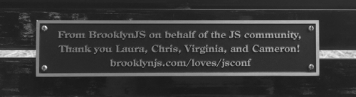

A letter to Laura and Chris Williams
from BrooklynJS
Since BrooklynJS started in 2013, it's amazing to see how far we've come. We've showcased hundreds of speakers to thousands of attendees, who along with our sponsors have helped tens of thousands of dollars for good causes. It has grown alongside a new community of JavaScripters that has become one of the most vibrant in the world.
Of course, in growing our new community, we followed closely in your footsteps building JSConf, from using your logo to adopting your code of conduct.
When we heard that 2015's JSConf would be the last as we know it due to health issues, it hit us pretty hard. So to commemorate all that you've done for our family, BrooklynJS set aside some funds from our attendees and sponsors, to give something back to yours.
With the help of the Department of Community Development in the Town of Herndon, we dedicated a park bench in your honor, in the center of your town. We hope it reminds you, Virginia, and Cameron of the amazing community that simply would not have existed without the work you put into it.

So here's to a healthy future for you and yours, from BrooklynJS on behalf of the JavaScript community you built.